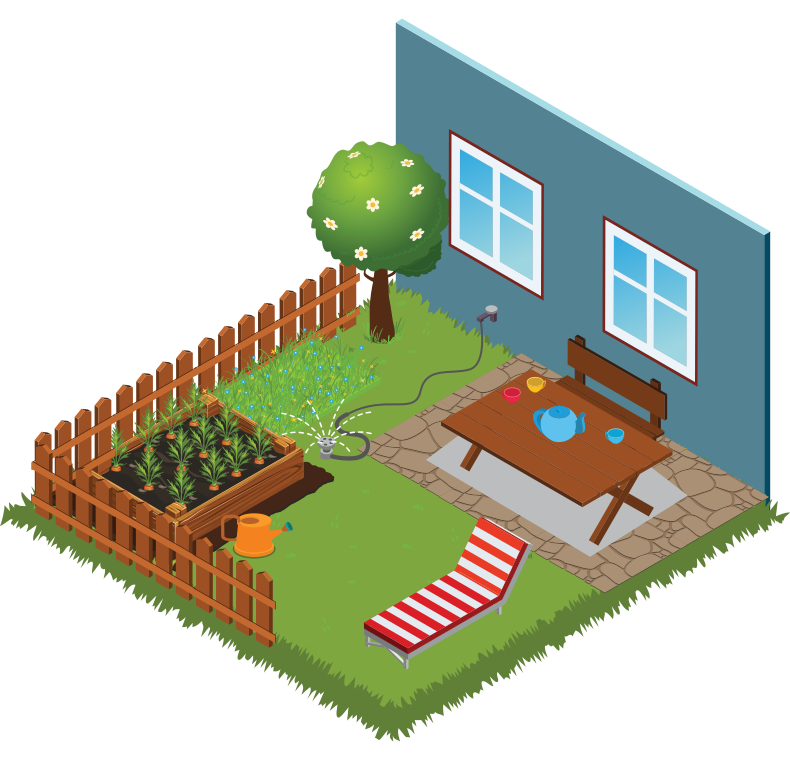
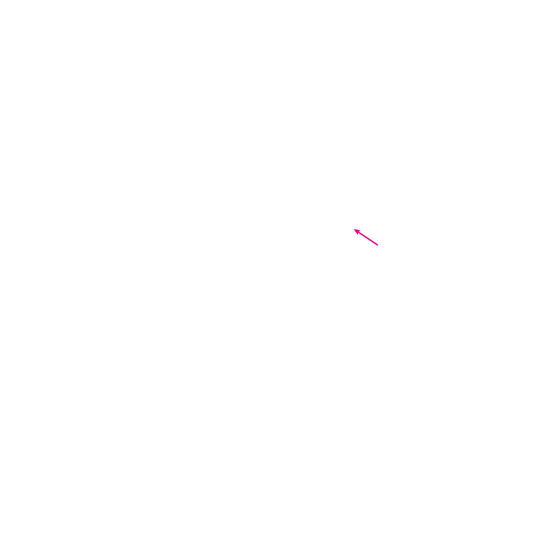

In The YARD


- AT THE SPIGOT: Ensure tight connections with the hose. Replace the hose washer if it has dried out or is worn.
- AT THE SPIGOT: Look for drips at the spigot. Tighten the handle’s packing nut or replace washers in the spout.
- IN-GROUND IRRIGATION SYSTEM: Check for broken sprinkler heads or nozzles spraying in the wrong direction. You may want to consult an irrigation auditor certified by a WaterSense labeled program to improve system efficiency: www.epa.gov/watersense/find-pro.